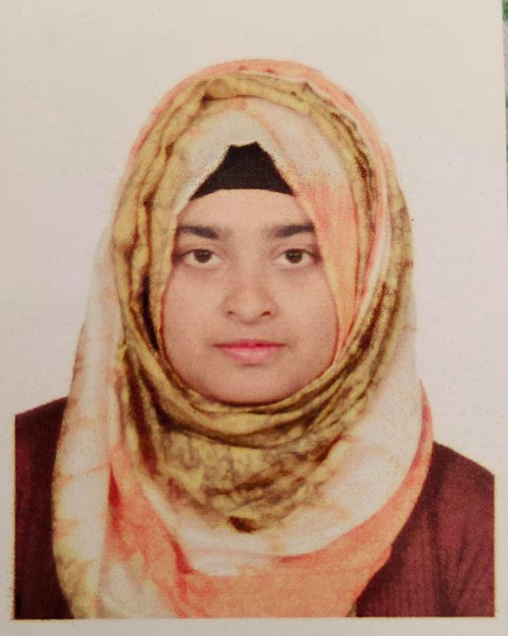

CURRICULUM VITAE

Nowshin Nowal Heme
Address: 13/A boundary Road
Mymensingh
Phone Number:
Email: hemenowal@gmail.com
Personal Data
Nationality : Bangladeshi
Sex : Female
Date of birth : August 25, 1998
Education
SSC : 2014 (GPA-5)
HHC: 2016 (GPA-5)
Graduation : B.sc in Animal Husbandry (present)
Facuity : Animal Husbandry
Univerity:
Bangladesh Agricultural Univerity, Mymensingh
Career Objective
To develop the livestock sector in Bangladesh